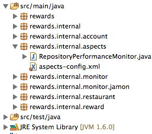
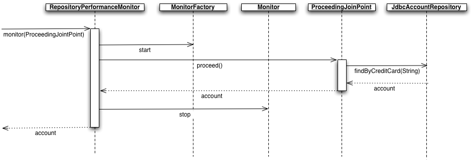
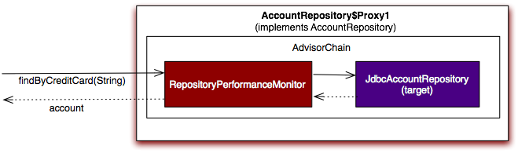
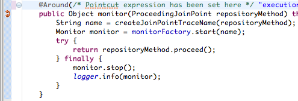
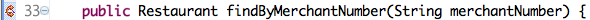
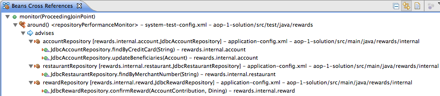
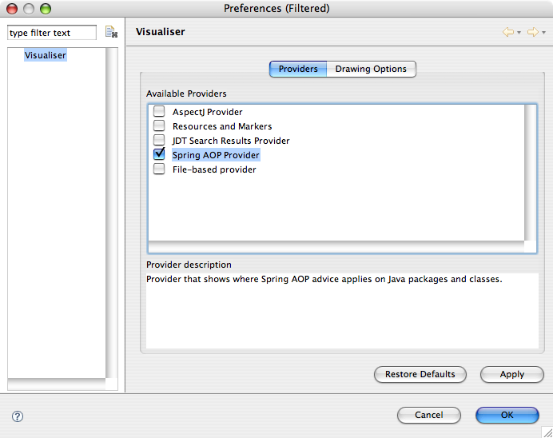

In this lab you will gain experience with aspect oriented programming (AOP) using the Spring AOP framework. You'll add cross-cutting behavior to the rewards application and visualize it.
What you will learn:
How to write an aspect
How to weave an aspect into your application
How to visualize where an aspect will be applied
Specific subjects you will gain experience with:
@AspectJ AOP syntax
Spring IDE AOP visualization
Estimated time to complete: 45 minutes
Up until now you have used Spring to configure and test your main-line application logic. Real-world enterprise applications also demand supporting services that cut across your main-line logic. An example would be security: there may be many places in your application where you need to perform a security check. Historically, this may have lead to copying-and-pasting code, or entangling your application code with infrastructure. Today, you turn to aspect oriented programming (AOP). In the following steps you will create an aspect to monitor your application's data access performance.
In this step you will create a performance monitoring aspect.
First you will define the monitoring behavior, then the rules about
where the behavior should be applied. You'll use the
@Aspect style.
You're in luck: the definition of the aspect has already been
started for you. Find it in the
rewards.internal.aspects package:
|  |
Figure 1: The RepositoryPerformanceMonitor
Open this file and you'll see several TODOs for you to complete.
First, complete TODO 1 by annotating the
RepositoryPerformanceMonitor class with the
@Aspect annotation. That will indicate this class
is an aspect that contains cross-cutting behavior called "advice" that
should be woven into your application.
Next, scroll down to the definition of the
monitor(ProceedingJoinPoint) method. This is the
method you will weave into your application to monitor its
performance.
You aren't interested in monitoring every method of your application, though, only a subset. Specifically, you're only interested in monitoring your repositories, the objects responsible for data access in the application. This will give you a gauge of your data access performance.
Here is what should happen: before any repository is invoked,
your monitor method should be called. It should
then start a monitor, proceed with the repository invocation, then
stop the monitor after the invocation returns and log a report. This
is clearly "around" advice, as it will execute logic before
and after your repositories. The desired "around"
behavior is shown graphically below:
|  |
Figure 2: A Stop Watch around a repository method
To make this happen, complete TODO 2 by
annotating the monitor(ProceedingJointPoint) method
with the @Around annotation. Its expression should match any method on the
AccountRepository,
RestaurantRepository, or
RewardRepository interfaces.
![[Tip]](images/tip.png) | Tip |
|---|---|
Refer back to the AspectJ pointcut expression language reference in the training material to help you. |
Now in monitor(ProceedingJoinPoint) notice
the Monitor start and stop logic has already
been written for you. What has not been written is the logic to
proceed with the target method invocation after the watch is started.
Complete TODO 3 by adding the proceed call.
| Tip |
|---|---|
Remember, the call to
|
Once you've added the proceed call, run the
RepositoryPerformanceMonitorTest class in the test
tree. If you get the green bar, your monitoring behavior has been
implemented correctly. Now all you have to do is make sure this
behavior gets woven into the right places.
You now have fully defined the aspect expressing where performance monitoring behavior should apply. Move on to the next step!
Now that your aspect has been defined, you will create the Spring configuration needed to weave it into your application.
Find the aspects-config.xml file inside the
rewards.internal.aspects package. In this file,
first define a bean of class
RepositoryPerformanceMonitor (TODO 4). This
will deploy your aspect as a Spring bean. Note that the
RepositoryPerformanceMonitor takes a monitor factory as a constructor
argument. A factory has already been defined for you.
Next, add the <aop:aspectj-autoproxy>
tag to this file (TODO 5). This instructs Spring to process beans that
have the @Aspect annotation by weaving them into
the application using the proxy pattern. This weaving behavior is
shown graphically below:
 |
Figure 3: Spring's auto proxy creator weaving an aspect into the application using the proxy pattern
Figure 4 shows the internal structure of a created proxy and what happens when it is invoked:
|  |
Figure 4: A proxy that applies performance
monitoring to a JdbcAccountRepository
![[Note]](images/note.png) | Note |
|---|---|
Note it is not required, but it is generally recommended that
you explicitly denote what beans are aspects in the XML
configuration. To do this add an
|
When you have your aspect defined as a Spring bean along with the autoproxy tag, move on to the next step!
To see this aspect in action, plug it into the application's
system test configuration. To do that, simply add an import for
aspects-config.xml in the
system-test-config.xml file (TODO 6).
After the configuration file has been added, run
RewardNetworkTests in Eclipse and watch the
console. Note that this is not the same test you ran before. The
RepositoryPerformanceMonitorTest is a unit test and
only tests the aspect. The RewardNetworkTests is
the integration test that actually applies the aspect. You should see
output that looks like this:
AccountRepository.findByCreditCard: Last=1.0, Calls=1.0... RestaurantRepository.findByMerchantNumber: Last=1.0... AccountRepository.updateBeneficiaries: Last=1.0... RewardRepository.confirmReward: Last=8.0, Calls=1.0...
When you see repository performance monitoring output, your aspect is being applied! Move on to the next step!
AOP is a powerful way of adding cross-cutting behavior to an
application, but it can be difficult to visualize exactly where an
aspect will be applied. In the following steps you will explore
different ways to visualize aspects using Spring IDE. The SpringSource
Tool Suite will have to know about your aspects config file, but as you
added an <import/> statement in the previous
step that's taken care of automatically.
With your aspect configuration added, you can now open the
classes for both your aspect(s) and bean(s) and see visual indicators
of cross-cutting behavior. To verify, first open your
RepositoryPerformanceMonitor class and
scroll-down to the
monitor(ProceedingJoinPoint) method:
|  |
Figure 5: The arrow gutter icon indicates that the
monitor method is an around advice that
advises one or more beans
As another example, open
JdbcRestaurantRepository and scroll to the
findByMerchantNumber(String) method:
|  |
Figure 6: The arrow gutter icon indicates the
findByMerchantNumber method is advised
These particular displays are somewhat limited because they only indicate a method is advice or is being advised. For more information on what is being advised by an aspect you turn on the Beans Cross References view. To do this, from the menu bar select Window -> Show View -> Other... Then, expand the Spring node and select Beans Cross References. You'll see the Beans Cross References view appear in the bottom page area:
|  |
Figure 7: The monitor around
advice advises several beans
| Tip |
|---|---|
If the cross references aren't being displayed, check that the view is "live" by clicking the icon with the two gold arrows pointing in opposite directions (it shows as a depressed button when it is active). |
Explore the Beans Cross References view to see how the
monitor around advice advises your beans,
then move to the next step.
The Beans Cross References view is a useful way of visualizing how a single aspect is applied to multiple classes. However, it doesn't provide a high-level visualization of all the cross-cutting behavior in your system. To provide this, Spring IDE integrates with the AJDT Aspect Visualization perspective.
Open the Aspect Visualization perspective by selecting Window -> Open Perspective -> Other... -> Aspect Visualization. When the perspective is open click on the Menu pull down in the Visualize view and choose Preferences.
 |
Figure 8: Open the visualizer preferences with the Menu pull down
Next choose the Spring AOP provider and press OK. This will tell AJDT to use Spring AOP when drawing its aspect graphics.
|  |
Figure 9: The Spring AOP Provider
In the left most panel, select the
aop-1-start project. You will see all of the
classes in the project displayed with colored bands where an aspect is
applied. In this example, you should see blue bands on your
repositories indicating they are advised by the
RepositoryPerformanceMonitor. This is shown
below:
 |
Figure 10: The AJDT visualizer showing aspects application-wide
Explore the AJDT Visualizer. When you're finished, you've completed the lab! You've just created a piece of cross-cutting logic called an aspect and applied it to your application. In the second half of the lab, you used visualization tools provided by SpringSource Tool Suite to understand where your aspect is applied.